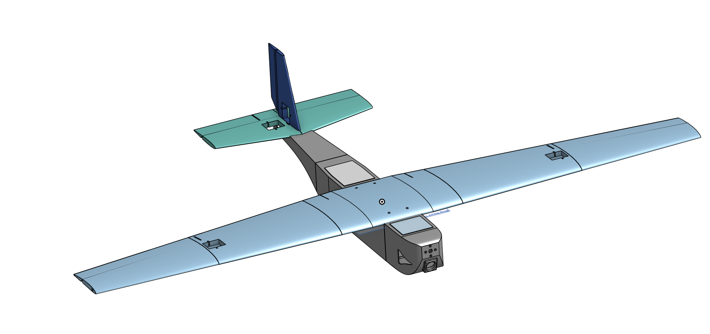
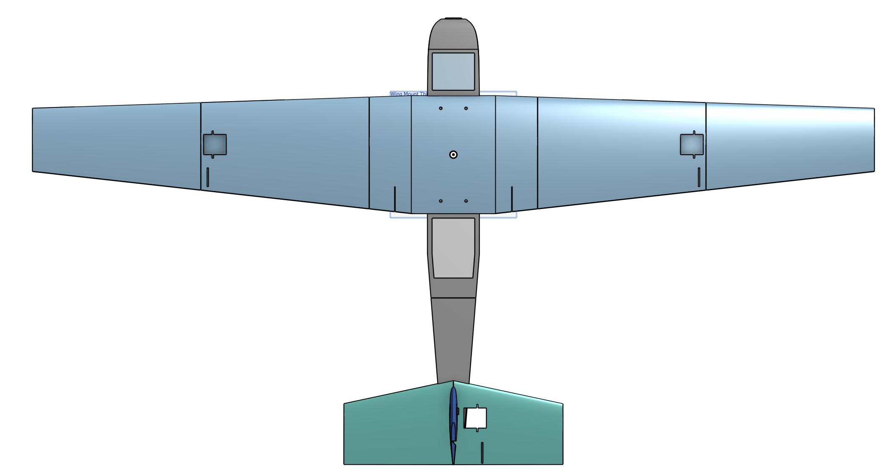
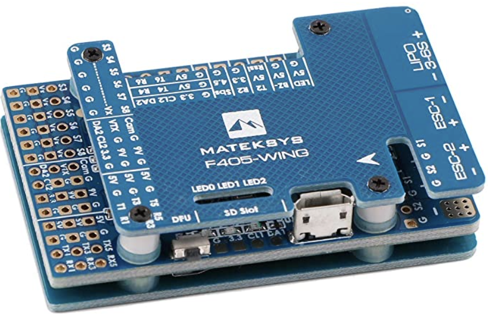
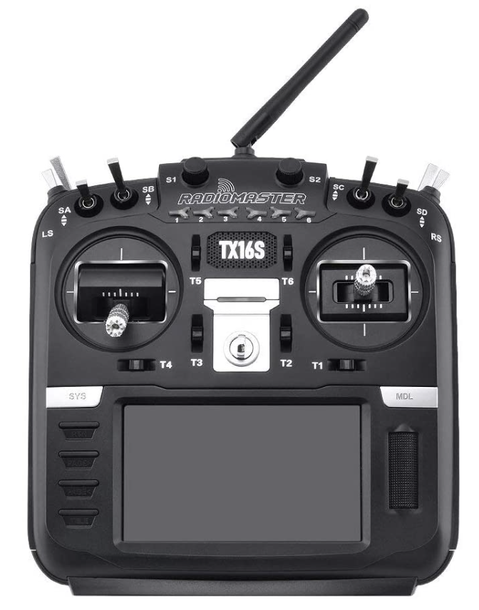
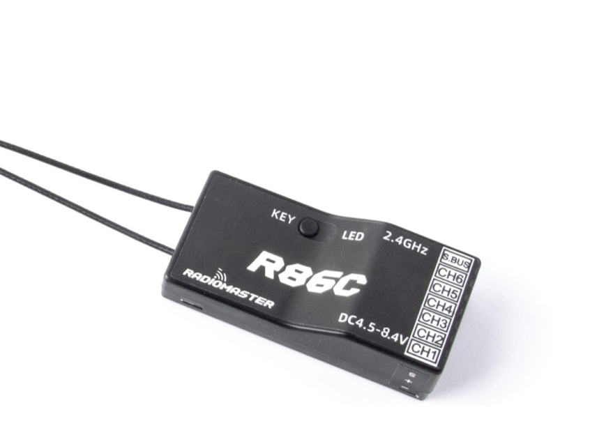
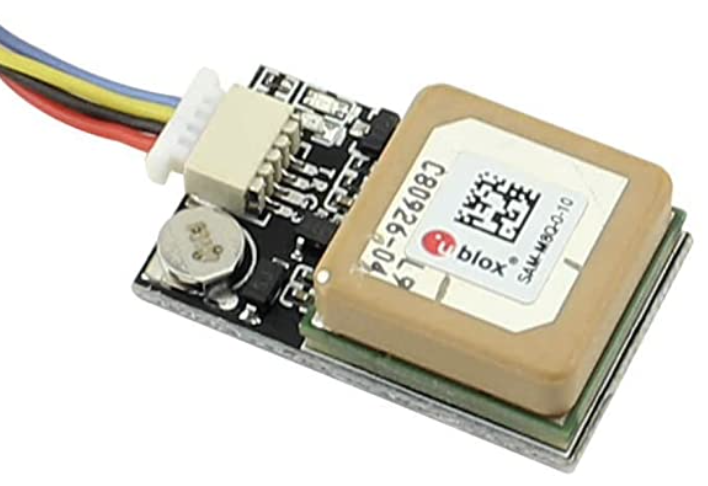

In this new version of the UAV I tried to design it from scratch and manafacture it by using 3D printing.
For the 3D print... (In progress)


In this new version of the drone I fixed many of the issues that I found while flight testing V1.
- The foam that I used for the wings is a lighter and cheaper dollar tree foam rather than the elmers branded foam board. Although this took some of the structure from the plane, I made up for it by keeping fuselage out of the stronger foam and reinforced it with wooden dowel rods on each corner to prevent bending. This allowed for the plane's foam to compress on impact, but not bend or break if any rough landings happen.
- Adding dihedral to the wings allowed the plane to self level even without any controls. Dihedral is defined as wings that tild upward, which increases lateral stability in a bank by causing the lower wing to fly at a higher angle of attack than the higher wing. This causes more lift to be given to the lower wing causing it to recover. The only downside to dihedral that should be noted is that the wings no longer cause purely vertical lift which can lead to drag and decreased roll rate, but this is all worth the stabillity it allows.
- I got the flight computer running ardupilot firmware to be able to do stabilization so the Yaw, Pitch, and Roll get corrected automatically allowing for a hands off flight. This has lead to there being no crashes so far in the current version and full flights even in winds 5-10kt. vb
- I reduced the weight by stripping any unnessesary parts from the fuselage and moved the motor to the front.
- A huge focus went to making sure the center of gravity (CG) was in the correct spot instead of an estimate. The CG is defined as lining up with the center of lift of the plane which is on average 25-33% on the front of the wing. This can change from aircraft to aircraft because they can vary in weights and shapes.


In this project I designed and built a UAV as a start to my goal of creating a long distance autonomous drone that can be retrofitted for various tasks. I started this project by deciding on what type of drone I wanted to build, my favorite of which are fixed wing aircraft that have a glider type of airframe because they are more fun to fly. I decided on doing a 4ft wingspan fixed wing single motor design that would have the motor mounted on top of it to allow for gentler crashes and easier training. The firmware of the flight controller is ardupilot with mission planner installed to utilize the sensors and data avaliable.





